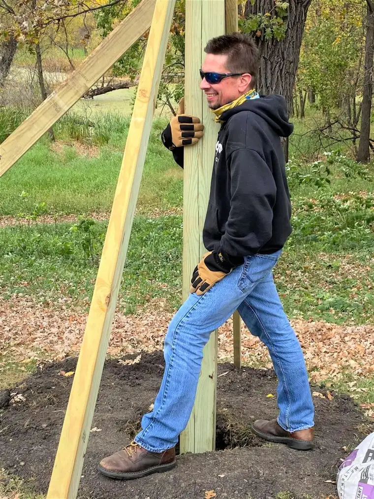
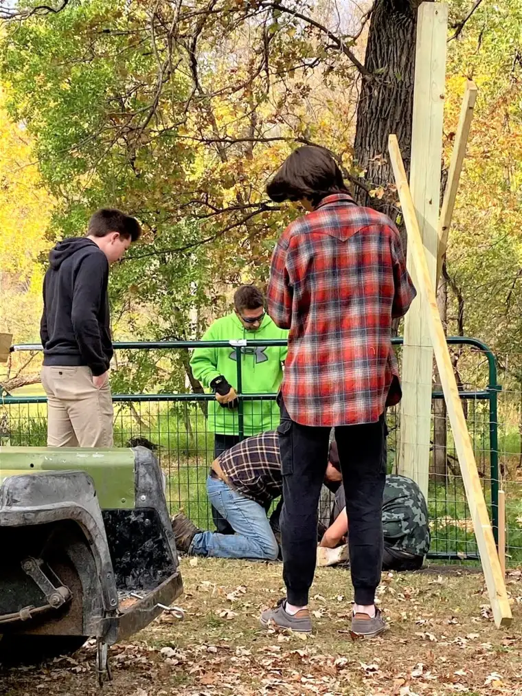
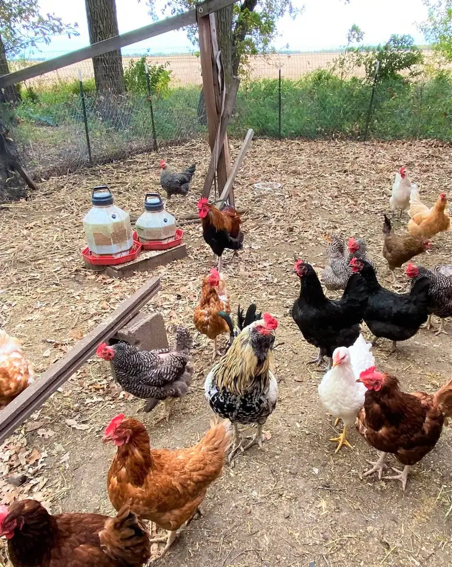

Has it ever bothered you, this question: “Is Jesus Christ your personal Lord and savior?”
Personally speaking, if I might, the word “personal” causes me pause. Because while there’s no question Jesus the Christ, the Lord, came to save us, I struggle with rectifying the “personal” aspect of this query.
To be fair, what’s being assumed, I believe, is that, in order to be truly heart-converted, we must have an ongoing, living relationship with Jesus. And this must be our own decision, something we have personally chosen, because we will personally stand before God at the end of our life.
That’s all fine and good and I don’t have a problem with any of that. But I still find the line lacking. Recently, a parish mission at our church helped me pinpoint why. The talk, given by Monsignor Robert Laliberte, can be found here, along with the other two talks of the mission. I’ll do my best to summarize it to make sense of his main, final point: that salvation is more communal than personal. Or, as he said, salvation is “corporate.”
Laliberte began to find evidence for this in studying Scripture — firstly, in the phrasing of the Douay–Rheims Bible, one of the oldest Biblical translations, and how often the “second personal plural” is used.
To simplify, more often than not, writers like Saint Paul are not addressing the important matter of salvation to one person in particular, but to the community as a whole.
“That worked on me,” Laliberte said, “and I began to notice more and more this corporate dimension of everything.” He then began to wonder if this changed how we’re to approach salvation and that “maybe…my salvation is tangled up with everyone else’s salvation.”
That’s the New Testament, but Laliberte pointed to a number of stories in the Old Testament holding evidence as well.
For example, Moses was not sent into Egypt by God “to pull out a bunch of individuals…” Rather, he said, “the descendants of Israel were in a shared bondage.” Additionally, the Red Sea “only opened once, and it was that entire corporate body that walked through there to the other side…If you came by yourself, you’d either get there too soon and be blocked by the sea, or too late and get wiped out by the Egyptian army…”
And unlike how things were construed in the movie, “The Ten Commandments,” the Lord did not speak the commandments to Moses alone, Laliberte assured; rather, “the Lord God…descended upon that mountain and spoke directly to the body of people standing at the base of the mountain…as a single, corporate group of people…and those commandments governed the way this body of people was to live…”
Only one tabernacle exists, he continued, and in it, the Lord who wishes to indwell the people, who then organized themselves around a common priesthood and one king. “And that kingdom suffers the same fate or blessings together,” Laliberte observed. “If they follow the king, the whole nation gets blessed.” And if things don’t go well, “The whole nation will be conquered and taken into exile.”
Jesus did not evangelize individuals, Laliberte noted. “He went into the synagogues and talked to people there, or would go up on a mountain, and people would gather, and he would talk to them together.” When he multiplied the loaves and fishes, it was for a huge crowd.
“The funny thought came to my mind,” Laliberte remarked, at this point, with a smile. “You never see Jesus doing door-to-door evangelizing. If he’s your personal savior, why wouldn’t he go door-to-door?”
Later, as the prophets were sent out to preach the Good News, they addressed the entire nation, Laliberte said, replaying their message: “All of you collectively are called to repent, and unless you collectively repent, the collective nation is going to be destroyed, and a lot of innocent people are going to suffer because of this.”
Over and over we find the trajectory of salvation as one that happens in community, and not to us as solitary individuals. Even the sacrament of marriage is tied up in this, Laliberte said.
“What God has joined together, let no human being split asunder,” Laliberte quoted, referencing how marriage is described Scripturally. “The word there is not ‘to separate.’ The word is ‘to take a knife and take a single thing and slice it in half; to destroy the organism.” And marriage, a sacrament, is also a primary institution of salvation, he explained. This salvation works not through one person alone, but the two together, who then bring others into the same salvific process — their children and their children’s children.
Here, I think, is where the rubber meets the road. As mothers and fathers, we have a sense that our salvation connects with the salvation of our spouses and our children. Indeed, from the moment we learn of our children’s existence, we begin to understand salvation as communal — if not before, at the altar of matrimony.

Which brings me to a couple weekends ago, when our middle son was tasked with doing his Eagle Scout project. If he should reach his goal by his 18th birthday the end of November, there is no doubt in my mind that he did not do so alone.

The fence he helped build to benefit the folks at Harvest Hope Farm — run by a family seeking a cure for Huntington’s Disease through raising sheep that may hold the key — was not erected by his hand alone. I would venture to guess that the owners of the farm would say the same about all the work that has gone into making their farm and its surrounding ministries a reality.
It took our family, the farm family, the many other volunteers, and all the years of involvement with everyone who came along with our son on this journey, to make it happen. As the song goes, “We get by with a little help from our friends.”

My final thoughts on this? While this communal or corporate version of salvation might be daunting in one sense — after all, it means that we have more to think about when it comes to salvation than just ourselves — it is also beautifully freeing.

What does communal salvation mean in the positive? It means that we are not alone; that we were never meant to be alone, and that we can’t possibly be alone, even if we try.

It means that, at death, it won’t be just us and Jesus, but us, Jesus, and all those who have journeyed with us along the way — the saints, angels, Mary, and the entire community of believers who have been praying with and for us.
Q4U: What are your thoughts about salvation as a communal reality?
.